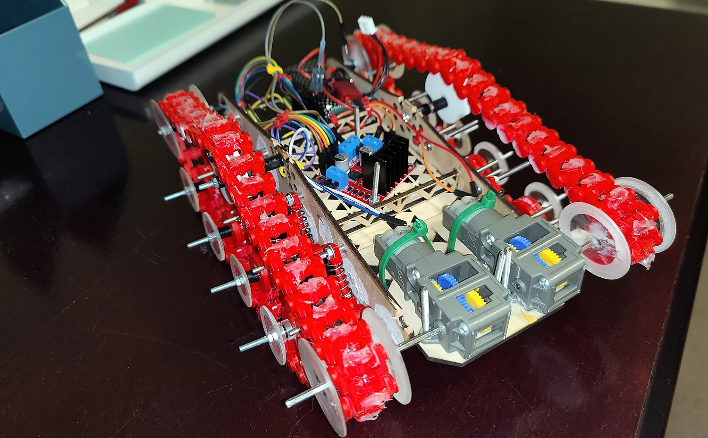
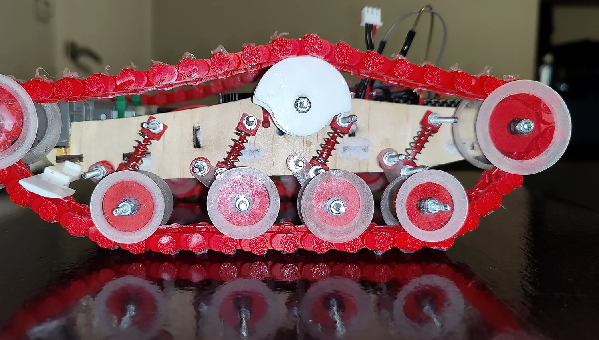
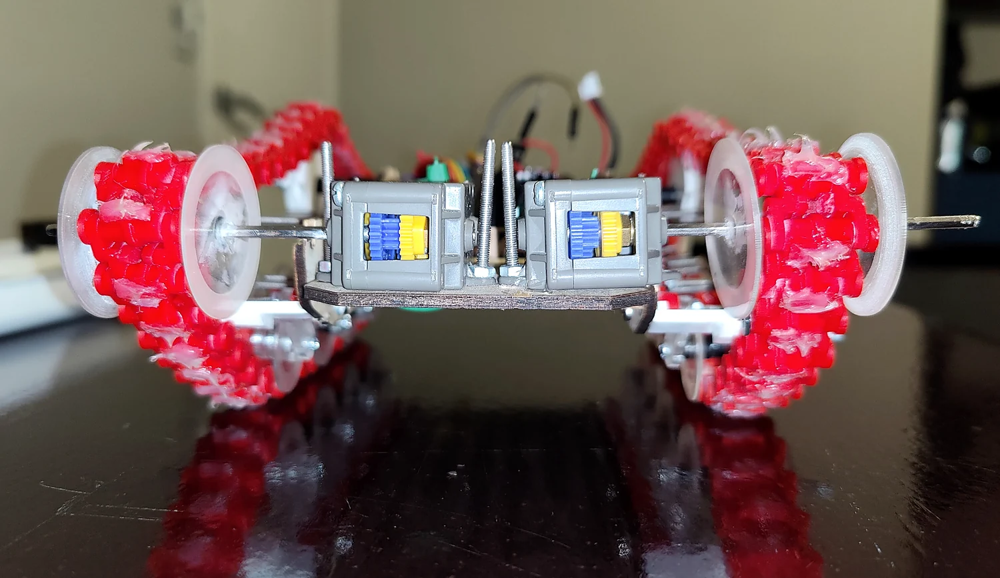
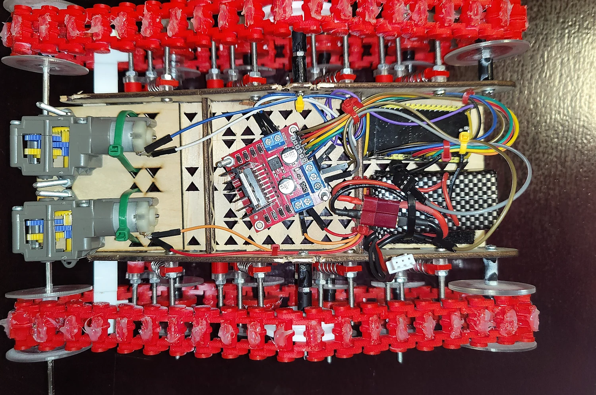

Printed tread links
A continuous chain of red printed links forms each track around larger end wheels and smaller supported road wheels.
A custom tracked remote-controlled vehicle using 3D-printed track links, multiple supported road wheels, spring-loaded suspension and compact drive hardware.

This project centres on the running gear of a small tracked RC vehicle. Red 3D-printed track links wrap around multiple guide and road wheels, while a fabricated frame holds the motor drive, suspension hardware and control electronics.
The paired tracks and numerous small suspension components made this a mechanical design and assembly challenge. The design exposes how the road wheels, spring-loaded arms, drivetrain and frame relate to each other.
The gallery documents the track geometry, motor arrangement and electronics. Development details and performance results will be incorporated when the original project documentation is available.
The photographs below are from the original build. They have only been cropped and given basic brightness, contrast and sharpness adjustments; no mechanisms or components have been generated or replaced.



A continuous chain of red printed links forms each track around larger end wheels and smaller supported road wheels.
Several spring-loaded suspension arms support the road wheels and permit movement relative to the chassis.
Visible gearbox and motor units, motor-drive electronics and wiring are mounted within the structural chassis.